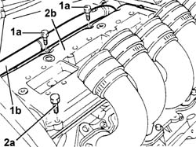

1016A34 Right TAPPET COVER - R.R. and Replace gasket
- Path
- Procedures > 10 ENGINE > 1016 CYLINDER HEAD(S) > 1016A TAPPET COVERS > 1016A34 Right TAPPET COVER - R.R. and Replace gasket
- Kind
- repair procedure (removal / refitting; the operation number is the code)
- Applies to
- engines: 2.0 TB, 2.4 20V, 3.0 V6, 3.2 V6; all production periods
- Interactive page
- https://sloeber94.github.io/elrnDB-lThss/en/#/184660
Applies to: engines: 3.0 V6, 3.2 V6; all production periods
 Removing
Removing
 Refitting
Refitting- Open the boot, remove the cover on the left hand side and disconnect the negative battery lead.
See in Op. 7040D50 ENGINE COMPARTMENT UPPER SOUND INSULATION SHIELD - R.R.
See in Op. 1048A21 AIR INLET HOSE FROM INTAKE TO FILTER - R.R.
See in Op. 1048A28 vacuum air circuit resonator pipe - r+r
See in Op. 1072B50 Air CHAMBER - R.R.
See in Op. 5510C18 Right cylinder head IGNITION COILS - R.R.
See in Op. 5510C18 Right cylinder head IGNITION COILS - R.R.
1. Undo the two bolts (1a) fixing the rigid section (1b) of the alternator cooling pipe.
2. Undo the bolts (2a) and remove the tappet cover, right side (2b), complete with gasket.

Applies to: engines: 3.0 V6, 3.2 V6; all production periods
Refitting
Removing- Fit the right side tappet cover, complete with a new gasket, and secure it tightening the bolts to the recommended torque taking care to position rigid section of the alternator cooling pipe before tightening the bolts.
 | Value - daNm | Fastening | Component | Ø |
|---|---|---|---|---|
. | 1.3 | Bolt | TAPPET COVERS | M7 |
See in Op. 5510C18 Right cylinder head IGNITION COILS - R.R.
See in Op. 1072B50 Air CHAMBER - R.R.
See in Op. 1048A28 vacuum air circuit resonator pipe - r+r
See in Op. 1048A21 AIR INLET HOSE FROM INTAKE TO FILTER - R.R.
See in Op. 7040D50 ENGINE COMPARTMENT UPPER SOUND INSULATION SHIELD - R.R.
- Connect the negative battery lead, then close the boot.
Applies to: engines: 2.0 TB, 2.4 20V; all production periods
- Operation not available
Topics linked from this page (5)
- 1048A21 AIR INLET HOSE FROM INTAKE TO FILTER - R.R.
- 1048A28 vacuum air circuit resonator pipe - r+r
- 1072B50 Air CHAMBER - R.R.
- 5510C18 Right cylinder head IGNITION COILS - R.R.
- 7040D50 ENGINE COMPARTMENT UPPER SOUND INSULATION SHIELD - R.R.